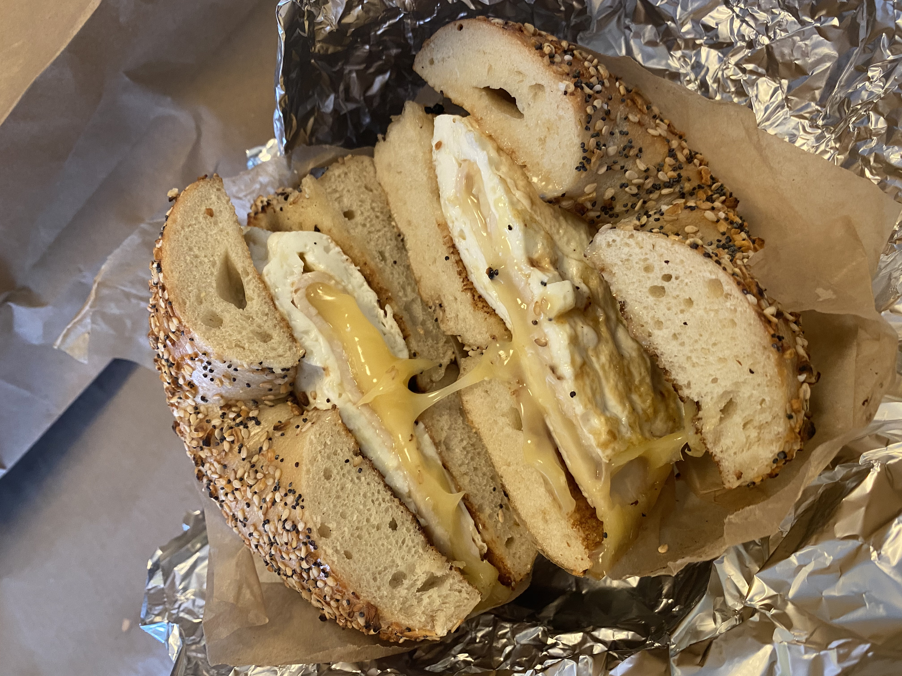

It doesn’t look like much from the outside, but the lines outside the door on a Sunday will tell you otherwise. Clinton St. Baking Company is in the Lower East Side and is home to the best pancakes in New York City. The pancakes are delightfully fluffy and stacked tall. You will leave here with a full stomach and a happy heart. If you aren’t in the mood for pancakes, Clinton St. Baking Company offers quality food across the board, such as latke eggs benedict and burgers.Must try item: Chocolate chunk pancakes with warm maple butter $15

If you’re in the mood for fresh food with Mediterranean inspired cuisine, head over to Jack’s Wife Freda. With a cozy and inviting atmosphere, you will feel like you are at home with you grandma’s cooking. The food is beautifully plated, making for some Instagram-worthy pictures. Must try item: Mediterranean Breakfast $16

If you don’t get a bagel while you’re in New York, you’re missing out. For less than $4 you can get the best bagels in the world… yes, I said the world. These are some of the biggest bagels I have ever seen, and they are perfectly crunchy on the outside with a chewy center. There are so many spreads to choose from. Have you ever heard of honey bacon siracha cream cheese or cannoli cream cheese? Head over fast, before they sell out for the day! Must try item: Toasted blueberry bagel with low-fat plain cream cheese $3.75

If you find yourself around Little Italy, but are craving Israeli food, Shoo Shoo is the perfect spot for you. This restaurant truly embodies Tel Aviv’s bright, bustling atmosphere. The ambience is warm, and the service is fast and friendly. The dishes are served on shareable plates, so bring a big group and don’t be shy to try everything. Must try item: Brioche French toast $17